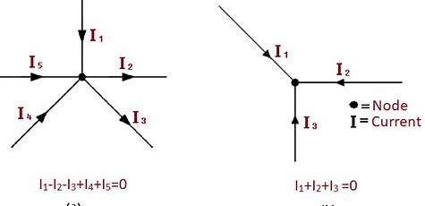
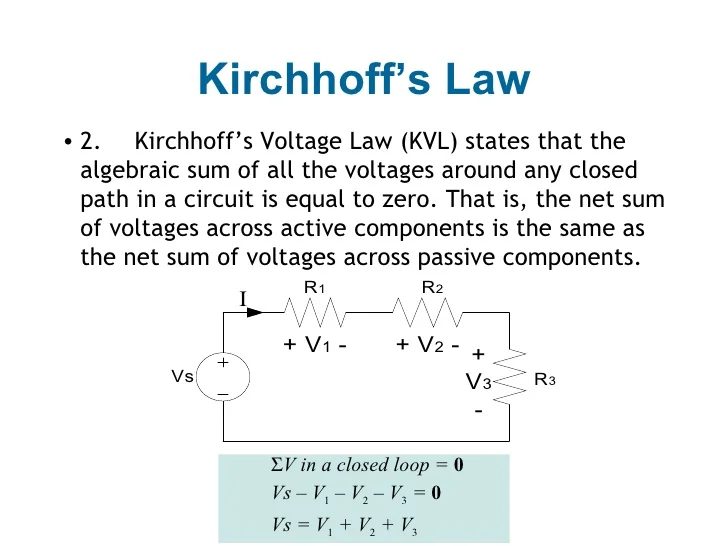

Kirchhoff's Current Law is also known as the "first law" or the "junction rule." The law states that the total current entering a junction (or node) in an electrical circuit is equal to the total current leaving the junction. In other words, the algebraic sum of currents at any node in a circuit is zero.
KVL is also known as the "second law" or the "loop rule." The law states that the total voltage around any closed loop in a circuit is equal to the sum of the individual voltage drops across the components within that loop.
 GO BACK